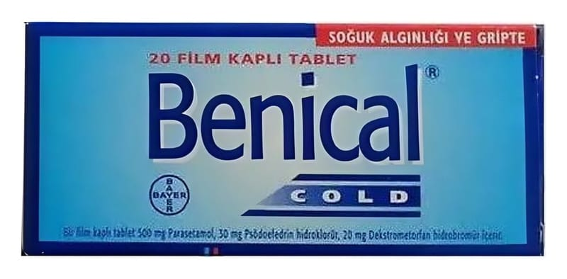

Benical Cold 500 mg/ 30 mg/20 mg Film Kaplı Tablet, 20 Adet

Ne için kullanılır
KT · Bölüm 1• BENİCAL COLD film kaplı tabletin her bir tableti etkin madde olarak 500 mg parasetamol, 30 mg psödoefedrin hidroklorür ve 20 mg dekstrometorfan hidrobromür içerir. BENİCAL COLD laktoz (inek sütü kaynaklı) içerir. Parasetamol, ağrı kesici ve ateş düşürücü etkilere sahiptir. Dekstrometorfan, öksürüğün sıklık ve şiddetini azaltır. Psödoefedrin, üst solunum yollarındaki ödemi (hücre ve dokularda anormal bir şekilde sıvı toplanması) azaltır, sinüs (yüz kemiklerindeki hava boşlukları) salgılarının atılımını artırır ve ağız boşluğu ile kulağı bağlayan ve kulak borusundaki hava basıncıyla atmosfer basıncının dengesini sağlayan östaki borusunun genellikle alerji, soğuk algınlığı veya diğer bir üst solunum yolu enfeksiyonundan (iltihap oluşturan mikrobik hastalık) kaynaklanan tıkanıklığını giderir.
• BENİCAL
COLD, 20 tabletlik ambalajlarda bulunur. • BENİCAL
COLD, ateş, ağrı ve öksürük, burun akıntısı ve tıkanıklığı ile seyreden soğuk algınlığı ve gribal enfeksiyonların belirtilerinin tedavisinde kullanılır.